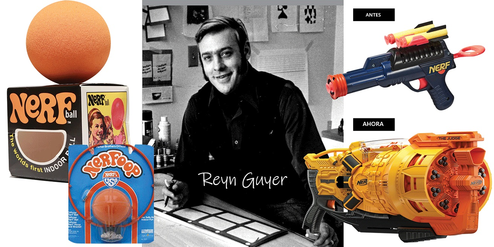

Bienvenido a Dardos de Espuma
Bienvenido a la página de los amantes del mundo de las pistolas de NERF, un lugar donde puedes encontrar la historia de la marca, algunas curiosidades sobre estas pistolas y más noticias relacionadas con este apasionante mundo de diversión.
El universo de los juguetes se transformó con la llegada de las pistolas Nerf. Estos divertidos juguetes de espuma que disparan dardos se han convertido en imprescindibles en muchos hogares y salas de juego. Disparar con sofisticados lanzadores de juguete es divertido, emocionante, social y también una buena manera de pasar el rato en familia.
Si quieres saber porque son tan populares, ¡sigue leyendo! Vamos a sumergirnos en los secretos de estos fascinantes juguetes y entender la ciencia que los hace tan especiales.
Historia
En 1970, Parker Brothers presentó al mundo una bola de espuma de 10 centímetros que se convertiría rápidamente en un juguete icónico y en uno de los productores de juguetes más reconocidos del siglo pasado.
La historia detrás de esta pelota Nerf es fascinante. Todo comenzó cuando el inventor de "Twister" llamado Reyn Guyer presentó su idea de un juego de voleibol de interior a Parker Brothers (más conocidos por juegos de mesa como Cluedo y Monopoly) en 1969.
Aunque el juego no fue aceptado, la pelota en sí misma despertó interés. Después de un poco de desarrollo, la pelota fue lanzada al mercado y ganó popularidad rápidamente gracias a su promesa de cero daños en interiores y cero lesiones.
Nerf Ball, el primer lanzamiento de NERF. La pelota Nerf fue anunciada como la «primera pelota de interior oficial del mundo». Se promocionaba con la línea «Tíralo adentro; No puedes dañar las lámparas ni romper ventanas. No puedes lastimar a bebés o ancianos». Incluso la palabra «Nerf» se convirtió en sinónimo de seguridad. La espuma utilizada para la pelota Nerf era suave y no causaba ningún daño, lo que la hacía perfecta para jugar dentro de la casa. Para finales de ese año, se habían vendido más de 4 millones de bolas Nerf.
De una sola pelota de 10 centímetros, la línea de productos de Nerf creció rápidamente. Se añadieron discos y aros de baloncesto, también conocidos como «Nerfoops», y pelotas de beisbol. Sin embargo, fue en 1991 cuando Nerf presentó su juguete más icónico: el bláster. Esta arma de juguete, que disparó dardos de espuma, se convirtió en un éxito instantáneo. La línea de productos de Nerf se ha expandido continuamente desde entonces, y hoy en día, la marca Nerf es sinónimo de diversión y seguridad.
Evolución de la marca
Durante los años 90, Nerf tuvo la oportunidad de expandirse rápidamente gracias a su asociación con Hasbro. Con una amplia gama de recursos a su disposición, Nerf se dedicó a diseñar y producir una serie de blásteres innovadores que capturaron la imaginación de los niños de todo el mundo. Los niños podrían elegir entre una variedad de blásteres que dispararan dardos, misiles, pelotas e incluso dardos con ventosa.
Además, un nuevo eslogan llamado «It's Nerf or Nothin'!» («¡Es Nerf o Nada!») se convirtió en un éxito rotundo, aumentando las ventas y manteniendo a los consumidores alejados de la competencia.
La ventaja distintiva de Nerf radicó en su innovación en armamento a base de espuma. La idea fue tan innovadora que tanto los padres como los niños acudieron en masa a las jugueterías. Los padres apreciaron el hecho de que los dardos no pudieran causar ningún daño en el interior y a los niños les encantaba poder dispararse con sus amigos sin hacerse daño y poder reutilizar los dardos fácilmente.

Evolución del logotipo
A lo largo de los años, el logotipo de Nerf ha cambiado con las tendencias del diseño gráfico y el crecimiento de la marca. Desde un estilo retro hasta el moderno y dinámico actual, cada logo representa una etapa importante en su evolución.
Curiosidades
Se fabrican más de 445.277.777 de dardos al año. Alguien con mucho tiempo libre ha calculado que, en 5 años, se fabrican tantos dardos que podrían dar la vuelta al mundo 4 veces si los pusiéramos en fila.
Alguien incluso ha calculado que Nerf lleva fabricados más de 4.007.500.000 proyectiles desde que se lanzaron las primeras Nerf allá por los años 90.
Las más grandes y las más pequeñas
Mark Rober
Mark B. Rober es un YouTuber, ingeniero e inventor estadounidense. Es conocido por sus videos de YouTube sobre ciencia popular, artilugios de bricolaje e ideas creativas.

Mark Rober
Mark B. Rober también tiene el Record Guinees por crear la pistola más pequeña del mundo, siendo esta más pequeña que un grano de arroz.
Michael Pick
Michael Pick es un Youtuber y tik toker estadounidense. Es conocido por sus videos de YouTube haciendo objetos en sus versiones minimalistas y gigantes.
Nerf Smallest
La compañía Super Impulse sacó su línea de productos "World's Smallest", donde han conseguido hacer las Nerf más pequeñas del mercado.
El evento más grande de la historia
Jared Guynes
Jared Guynes es un YouTuber y tik toker americano que tiene el Record Guinness por crear el evento con pistolas Nerf con más afluencia de la historia.
Contacto
¿Tienes algo que contarnos? Rellena los campos con tu información y tu mensaje y háznoslo saber :) Nos encanta conocer a gente nueva!